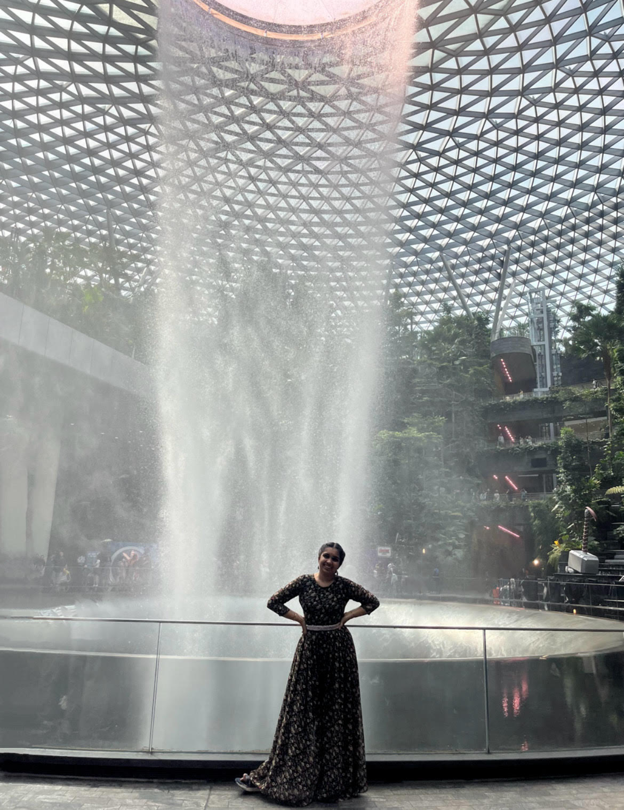

Profile Photo

Summary
Detail-oriented and highly motivated Computer and Autonomous Systems Engineering student with strong academic performance and a solid foundation in multiple programming languages. Demonstrates excellent problem-solving abilities, leadership capabilities, and effective communication skills. Passionate about sustainability and innovative technologies, striving for perfection in all endeavors. Works efficiently in groups, excels at motivating team members, and ensures successful project outcomes.
Education
University of Wollongong Bachelor Engineering
- Computer and Autonomous Systems Engineering
- Current GPA: 3.5/4
Work Experience
- Student Council Representative (Mayoor private school) 2022-23
- Represented my class in the student council, participating in school governance and decision-making.
- Organized school events to enhance student engagement and school spirit.
- Acted as a liaison between students and administration, communicating student concerns and suggestions.
- Helped develop and implement initiatives to improve the school environment and student experience.
- Sustainability Club Core Member (Mayoor private school) 2018-21
- Served as a core member of the Sustainability Club, playing a key role in promoting environmental awareness and sustainable practices within the school and local community.
- Led sustainability initiatives, including making and distributing paper bags to reduce plastic usage, and participated in hydroponics projects to grow and harvest fruits and vegetables using innovative agricultural techniques.
- Other volunteering activities (University of Wollongong)
- Volunteered for various programs and events taking place in the university.
Skills
- Programming Languages:
- Python
- SQL
- MATLAB
- HTML
- CSS
- JavaScript
- Soft Skills
- Leadership
- Teamwork
- Critical Thinking
- Problem-Solving
- Communication
- Time Management
- Adaptable
- Conflict Resolution
- Languages
- English
- Hindi
- Arabic(basic)
Certificates
- Trinity college London :- certificate of merit (initial - grade 6)
Other Details